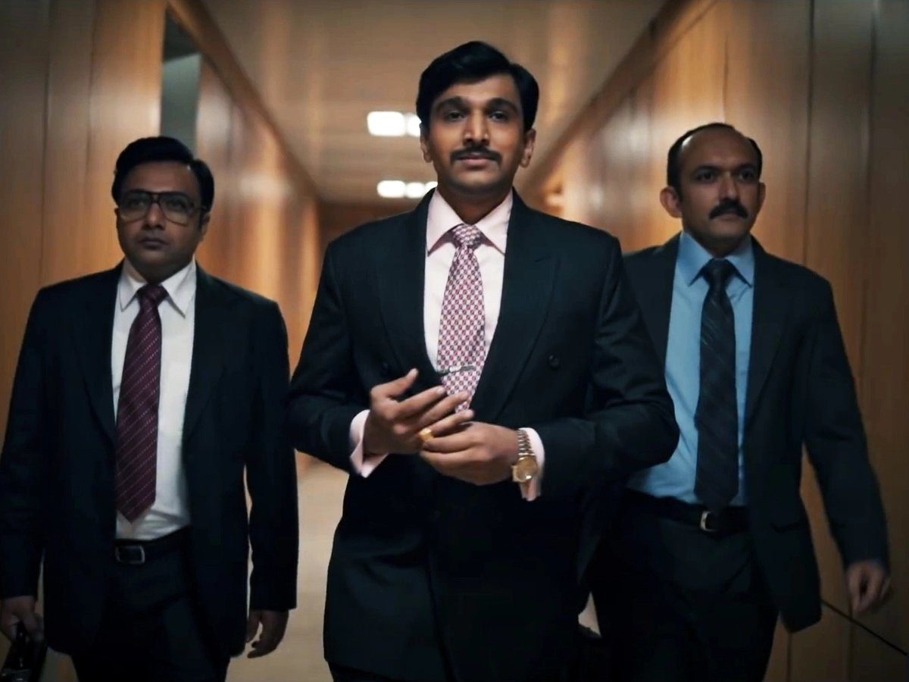

Scam 1992: The Harshad Mehta Story is an Indian Hindi-language biographical financial thriller streaming television series on SonyLIV directed by Hansal Mehta, with Jai Mehta serving as the co-director.[1] Based on the 1992 Indian stock market scam committed by many stockbrokers including Harshad Mehta, the series is adapted from journalist Sucheta Dalal and Debashish Basu's 1992 book The Scam: Who Won, Who Lost, Who Got Away.[2] The screenplay and dialogues were written by Sumit Purohit, Saurabh Dey, Vaibhav Vishal and Karan Vyas.
It stars Pratik Gandhi as the protagonist Harshad Mehta, with Shreya Dhanwanthary appearing in a parallel lead role, as Sucheta Dalal. The series also features Satish Kaushik, Anant Mahadevan, Rajat Kapoor, K K Raina, Lalit Parimoo, Hemant Kher and Nikhil Dwivedi in pivotal roles. The series focuses on Harshad Mehta's life story, his meteoric rise and the subsequent downfall.
Originally produced by Sameer Nair of Applause Entertainment, Hansal Mehta, worked for three years in writing the script consisting of 550 pages.[3] The project was officially announced in December 2019, with principal shoot beginning following its announcement. Filmed across 200 locations in Mumbai, within 85 days, the shooting was wrapped up in March 2020. The cinematography was handled by Pratham Mehta and the series was edited by Sumit Purohit and Kunal Walve. Achint Thakkar composed the background score. Scam 1992 was premiered on SonyLIV on 9 October 2020. The series eventually received praise from the performances of the cast members, writing and the major technical aspects.[4] It became the most viewed web series on the streaming platform.[5]
The episode begins with Sucheta Dalal narrating the rise of the Indian economy and the Bombay Stock Exchange in the 1990s. On 22 April 1992, Sharad Bellary, an employee of State Bank of India comes to the Times of India office to report about a fraud worth ₹500 crores. He reports it to Sucheta (Shreya Dhanwanthary) and tells that Harshad Mehta (Pratik Gandhi) is behind the fraud. In the early years, Harshad lived in a middle-class family with his wife Jyoti, brother Ashwin, father Shantilal and mother Rasilaben. Shantilal owned a cloth business but was not so successful. So Harshad had to do some odd jobs to take care of the family. He got frustrated with the money problem. So he thought of working in the share market. He got a job as a jobber in the Bombay Stock Exchange. He befriended Bhushan Bhatt, who taught him some of the basics. Harshad struggled on the first day, but he went on to become one of the best jobbers in the market. Then he began to collect insider information, which helped him to target certain stocks to make profits. But he wanted to increase his profit. So he quit his job and opened his own trading account with his brother Ashwin, which made his father frustrated. Later, Ashwin gets married and the whole family shifts to a new apartment. To increase profit, Harshad began spreading fake insider information about the stocks which he targeted. In this way, he managed to win the support of Pranav Sheth, one of the bulls of BSE who was clearly impressed with his skills. In 1982, the market crashed on Black Friday due to the actions of the BSE Bear Cartel and Ajay Kedia and Harshad and his brother had to deal with a loss of ₹10 lakh.
CBI pressurizes both Mehta and the Growmore clients forcing most of the clients scaring to be in the prison. Delhi strikes a deal with Harshad, based on which he withdraws his press statement. Growmore gets back to life with most of Harshad's assets being frozen. However, Bhushan's revelation is soon going to turn Harshad's world upside down. Bhushan sells out Harshad's shares because of the torture from the Central Bureau of Investigation. Harshad and his brother Ashwin are extremely mad at Bhushan for this act. Not knowing about Bhushan's plan beforehand, Harshad informs the CBI about some fraud in his company. Due to this fraud, the CBI thinks that Harshad is involved in a new scam and arrests him. After few months of arrest, Harshad Mehta is suffering from a heart problem causing his death from a heart attack. The episode ends where the police keep his dead body in the Lobby of Thane Police Station.